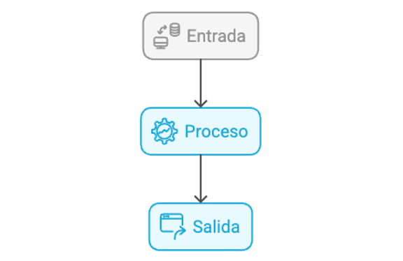
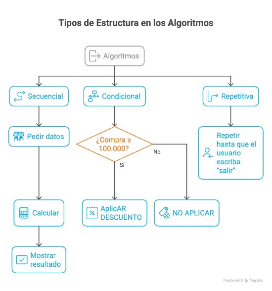

Concepto de algoritmo y su importancia
Aprender a programar no inicia escribiendo código, sino pensando la solución de forma lógica. Muchas veces sabemos qué queremos lograr (calcular un promedio, tomar una decisión, organizar datos), pero si no definimos bien los pasos, es fácil cometer errores o dejar instrucciones incompletas. Por eso, antes de usar un lenguaje de programación, es necesario analizar el problema, identificar qué datos se necesitan y planear un procedimiento claro.
En este proceso aparece el algoritmo, que es una secuencia ordenada, precisa y finita de pasos para resolver un problema. En programación, los algoritmos son esenciales porque permiten convertir una idea general en una solución comprensible, verificable y repetible: se puede revisar si está bien planteada, probar con diferentes datos y obtener resultados consistentes.
En este tema aprenderás qué es un algoritmo, por qué es la base de la lógica de programación y cómo reconocer si una secuencia de pasos realmente soluciona un problema. Esto servirá como fundamento para diseñar algoritmos con estructuras secuenciales y condicionales, que son el núcleo de esta primera unidad.
- ✓ Definir el concepto de algoritmo y reconocer sus elementos (entradas, proceso y salidas).
- ✓ Identificar las características de un algoritmo correcto (precisión, finitud, orden y efectividad).
- ✓ Aplicar el concepto mediante la redacción de algoritmos en lenguaje natural para resolver problemas cotidianos sencillos.
¿Qué es un algoritmo?
Un algoritmo es un conjunto de instrucciones ordenadas, claras y finitas que permiten resolver un problema o realizar una tarea. En términos prácticos, un algoritmo responde a la pregunta:
“¿Qué pasos debo seguir para obtener un resultado correcto?”
En programación, el algoritmo es la base del pensamiento computacional, porque permite convertir una situación del mundo real (problema) en una secuencia lógica de acciones que un computador puede ejecutar. Sin un algoritmo, el código suele quedar como intentos desordenados, con errores frecuentes y soluciones difíciles de entender o corregir.
📌 Idea clave: programar no es “escribir código”; programar es resolver problemas con lógica, y el algoritmo es el plan de esa lógica.
Componentes fundamentales: Entrada – Proceso – Salida (E–P–S)
Para que un algoritmo sea completo, debe definir:

✅ Por qué E–P–S es importante:
Esta estructura ayuda a organizar la solución y evita errores como “no sé qué datos usar” o “no sé qué debo mostrar al final”.
Propiedades de un algoritmo correcto
Algoritmo, procedimiento y programa (diferencias)
Aunque se parecen, no son lo mismo:
Representaciones comunes de un algoritmo
En lógica de programación se usan varias formas para expresar algoritmos, según el nivel:
Lenguaje natural: pasos escritos en español (o inglés), fácil de entender, ideal para empezar.
Pseudocódigo: forma semiestructurada con palabras clave (inicio, fin, si, entonces), más cercana al código.
Diagrama de flujo: representación visual con símbolos (inicio/fin, proceso, decisión).
✅ En esta guía trabajamos principalmente lenguaje natural, porque es la base para luego pasar a pseudocódigo y diagramas.
Tipos de estructura en los algoritmos
Los algoritmos suelen construirse combinando tres estructuras:

Errores comunes al diseñar algoritmos y cómo evitarlos
- ✓ ✅ Buen hábito: revisar siempre con E–P–S y con las propiedades (preciso, finito, ordenado).
✍️ Actividad 1. Identifica si es algoritmo
Instrucciones: Lee cada enunciado y selecciona una opción:
A) Sí es un algoritmo
B) No es un algoritmo
Luego escribe una justificación de una línea (ej.: “es ambiguo”, “no tiene entrada/salida”, “no es finito”, etc.).
“Suma dos números: pide A y B, calcula A+B y muestra el resultado.”
A) Sí es un algoritmo ☐ B) No es un algoritmo ☐
Justificación: ___________________________________________
“Organiza tu cuarto como te parezca.”
A) Sí es un algoritmo ☐ B) No es un algoritmo ☐
Justificación: ___________________________________________
“Para entrar al correo: abre el navegador, escribe la dirección, ingresa usuario y contraseña, presiona Enter.”
A) Sí es un algoritmo ☐ B) No es un algoritmo ☐
Justificación: ___________________________________________
“Cocina algo rico.”
A) Sí es un algoritmo ☐ B) No es un algoritmo ☐
Justificación: ___________________________________________
“Pide 3 notas, calcula el promedio y muéstralo.”
A) Sí es un algoritmo ☐ B) No es un algoritmo ☐
Justificación: ___________________________________________
“Si llueve, lleva paraguas; si no, sal normal.”
A) Sí es un algoritmo ☐ B) No es un algoritmo ☐
Justificación: ___________________________________________
“Haz ejercicio todos los días.”
A) Sí es un algoritmo ☐ B) No es un algoritmo ☐
Justificación: ___________________________________________
“Lee un número, si es mayor que 10 imprime ‘alto’; si no imprime ‘bajo’.”
A) Sí es un algoritmo ☐ B) No es un algoritmo ☐
Justificación: ___________________________________________
Evidencia: hoja con selección de opción (A/B) y justificación por ítem.
✍️ Actividad 2. Completa E–P–S (Entrada–Proceso–Salida)
Completa la tabla:
| Situación | Entradas | Proceso | Salida |
|---|---|---|---|
| Promedio de 3 notas | |||
| Total de compra con descuento | |||
| Determinar si es mayor de edad |
✍️ Actividad 3. Redacción de algoritmos en lenguaje natural (8–12 pasos)
Elige dos problemas y redacta el algoritmo en 8 a 12 pasos numerados. Debe incluir Entrada – Proceso – Salida.
Opciones:
A) Promedio de 3 notas
B) Mayor de edad
C) Descuento si compra ≥ 100.000
D) Convertir minutos a horas y minutos
Evidencia: 2 algoritmos completos.
Evaluación
Instrucciones: Selecciona una sola opción correcta en cada pregunta.
Evaluación
1. Un algoritmo se define como:
2. ¿Cuál de las siguientes afirmaciones describe mejor la precisión en un algoritmo?
3. ¿Qué significa que un algoritmo sea finito?
4. En la estructura E–P–S, la letra E representa:
5. En la estructura E–P–S, el Proceso corresponde a:
6. ¿Cuál opción contiene un ejemplo de salida?
7. ¿Cuál enunciado presenta una instrucción ambigua?
8. ¿Qué relación es correcta?
9. La estructura secuencial se caracteriza por:
10. ¿Cuál es un ejemplo de estructura condicional?
11. Un algoritmo es efectivo cuando:
12. ¿Qué propiedad asegura que con la misma entrada se obtenga la misma salida?
-
PSeInt (práctica de lógica y pseudocódigo)
Ir al recurso -
diagrams.net (dibujar diagramas de flujo)
Ir al recurso
- ✓ Joyanes Aguilar, L. (2008). Fundamentos de programación. McGraw-Hill.
- ✓ Deitel, P., & Deitel, H. (2016). Cómo programar en C++. Pearson Educación.
- ✓ Cormen, T., Leiserson, C., Rivest, R., & Stein, C. (2009). Introduction to Algorithms. MIT Press.